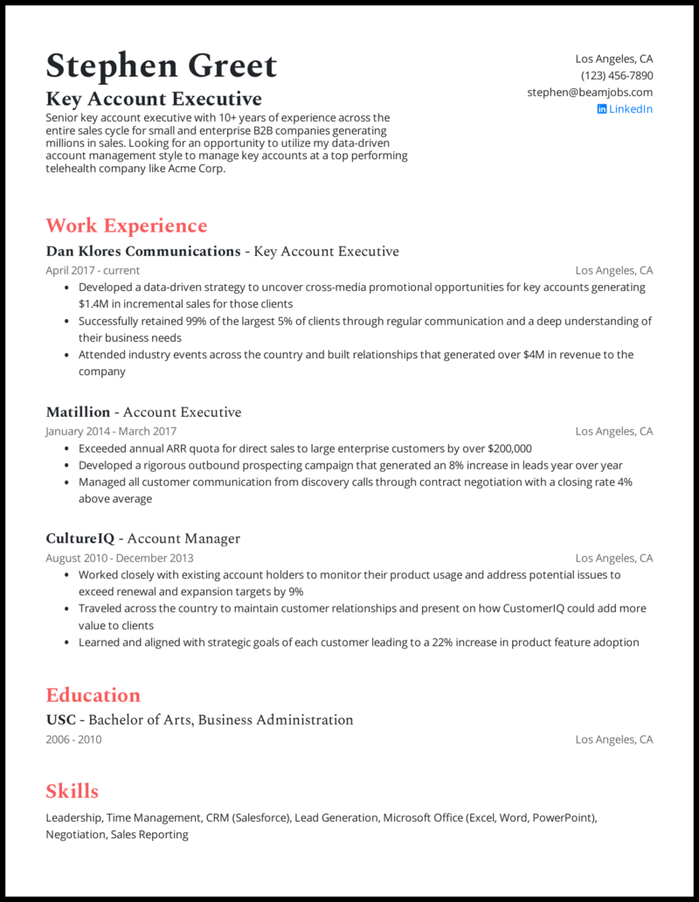

<mat-sidenav-container class="sidenav-container">
  <mat-sidenav #drawer 
      class="sidenav" 
      fixedInViewport="true"
      [attr.role]="(isHandset$ | async) ? 'dialog' : 'navigation'"
      [mode]="(isHandset$ | async) ? 'over' : 'side'"
      [opened]="(isHandset$ | async) === false">
      <mat-toolbar>Menu</mat-toolbar>
    
    <mat-nav-list>
      <a mat-list-item routerLinkActive="active" routerLink="/nav-bar"> Home </a>
      <a mat-list-item routerLinkActive="active" routerLink="/add-new" > Add New </a>
      <a mat-list-item routerLink=""> Resume List </a>
      <a mat-list-item routerLinkActive="active" routerLink="/contact-us">Contact Us</a>
      <a mat-list-item routerLinkActive="active" routerLink="/about-us">About Us</a>
      <a mat-list-item routerLinkActive="active" routerLink="/login">Log Out</a>
    </mat-nav-list>
  </mat-sidenav>
  <mat-sidenav-content>
    <mat-toolbar color="primary" fxlayout="row" fxlayoutAlign="space-between center">
      <button 
        type="button" class="toggle-icon"
        aria-label="Toggle sidenav"
        mat-icon-button
        (click)="drawer.toggle()"
        *ngIf="isHandset$ | async">
        <mat-icon aria-label="Side nav toggle icon">menu</mat-icon>
      </button>

           <a class="Home-btn" routerLinkActive="active" routerLink="/nav-bar">
             <button mat-button>
              <span class="material-icons"> auto_stories </span>
              <span class="name-tag">Resume-App</span> 
            </button> 
            </a>
          
           <div class="spacer"></div>
           
           <div class="btn-navbar">
            <button mat-button routerLinkActive="active" routerLink="/add-new" > <span class="material-icons"> add </span> </button>       
            <button mat-button routerLinkActive="active" routerLink="/notification"> <span class="material-icons"> notifications </span> </button>
            <button mat-button> <mat-icon class="material-icons"> search </mat-icon> </button>
           </div>
     </mat-toolbar>

<section>
    <div class="content-img"> 
      
    </div>

    <div>
      <div> 
        <mat-tab-group mat-align-tabs="center">
          <mat-tab label="Home">
            <p></p>
              </mat-tab>
          <mat-tab  label="New Resume">
          <div class="content">
            <div fxLayout="row wrap" fxLayoutGap="16px grid">
              <div fxFlex="25%" fxFlex.xs="100%" fxFlex.sm="33%" *ngFor="let num of [1,2,3,4,5,6,7,8,9,10]">
                <mat-card class="mat-elevation-z4" >
                  <mat-card-header>
                    <mat-card-title>Resume {{num}}</mat-card-title>
                  </mat-card-header>
                  
                </mat-card>
              </div>
            </div>
          </div>
        </mat-tab>

          <mat-tab label="Existing Resume">
            <div class="content">
              <div fxLayout="row wrap" fxLayoutGap="16px grid">
                <div fxFlex="25%" fxFlex.xs="100%" fxFlex.sm="33%" *ngFor="let num of [1,2,3,4,5,6,7]">
                  <mat-card  >
                    <mat-card-header>
                      <mat-card-title>Resume {{num}}</mat-card-title>
                    </mat-card-header>
                    
                  </mat-card>
                </div>
              </div>
              </div>
          </mat-tab>
        </mat-tab-group>
      </div>
    </div>
    
  </section>
     
    
    
  </mat-sidenav-content>
</mat-sidenav-container>
